A beginner's guide to creating a bulkAnalyseR app from a GEO dataset
Source:vignettes/GEO_App.Rmd
GEO_App.RmdIn this short tutorial we showcase a simple pipeline to create a bulkAnalyseR app using a publicly available dataset from the Gene Expression Omnibus (GEO). No pre-requisites are required, as the installation of bulkAnalyseR and download of the data are included.
The example app described in this vignette can be found here.
Installation
First, install the latest version of bulkAnalyseR, starting with the CRAN and Bioconductor dependencies:
packages.cran <- c(
"ggplot2", "shiny", "shinythemes", "gprofiler2", "stats", "ggrepel",
"utils", "RColorBrewer", "circlize", "shinyWidgets", "shinyjqui",
"dplyr", "magrittr", "ggforce", "rlang", "glue", "matrixStats",
"noisyr", "tibble", "ggnewscale", "ggrastr", "visNetwork", "shinyLP",
"grid", "DT", "scales", "shinyjs", "tidyr", "UpSetR", "ggVennDiagram"
)
new.packages.cran <- packages.cran[!(packages.cran %in% installed.packages()[, "Package"])]
if(length(new.packages.cran))
install.packages(new.packages.cran)
packages.bioc <- c(
"edgeR", "DESeq2", "preprocessCore", "GENIE3", "ComplexHeatmap"
)
new.packages.bioc <- packages.bioc[!(packages.bioc %in% installed.packages()[,"Package"])]
if(length(new.packages.bioc)){
if (!requireNamespace("BiocManager", quietly = TRUE))
install.packages("BiocManager")
BiocManager::install(new.packages.bioc)
}
install.packages("bulkAnalyseR")Download data and create app
Get the expression matrix
We start by downloading and reading in the expression matrix. Rows represent genes/features and columns represent samples (note you need an internet connection to run the code below). The matrix is from a 2022 study on the Stem Cell transcriptional response to Microglia-Conditioned Media. We only use a few samples in the study for illustrative purposes.
download_path <- paste0(tempdir(), "expression_matrix.csv.gz")
download.file(
"https://www.ncbi.nlm.nih.gov/geo/download/?acc=GSE178620&format=file&file=GSE178620%5Fraw%5Fabundances%2Ecsv%2Egz",
download_path
)
exp <- as.matrix(read.csv(download_path, row.names = 1))[, c(1,2,19,20)]
head(exp)
##> control_G322_G322_1 control_G322_G322_2 microglia_067MG_G322_1
##> ENSG00000223972 0 0 0
##> ENSG00000227232 51 45 25
##> ENSG00000278267 6 0 0
##> ENSG00000243485 0 0 0
##> ENSG00000284332 0 0 0
##> ENSG00000237613 0 0 0
##> microglia_067MG_G322_2
##> ENSG00000223972 0
##> ENSG00000227232 40
##> ENSG00000278267 0
##> ENSG00000243485 0
##> ENSG00000284332 0
##> ENSG00000237613 0Defining metadata
We use a very simple metadata table with just the main condition in the experiment. Detailed metadata is available for all GEO datasets and can be downloaded and used instead.
meta <- data.frame(
name = colnames(exp),
condition = sapply(colnames(exp), USE.NAMES = FALSE, function(nm){
strsplit(nm, "_")[[1]][1]
})
)
meta
##> name condition
##> 1 control_G322_G322_1 control
##> 2 control_G322_G322_2 control
##> 3 microglia_067MG_G322_1 microglia
##> 4 microglia_067MG_G322_2 microgliaPre-processing
We can now denoise and normalise the data using bulkAnalyseR
exp.proc <- bulkAnalyseR::preprocessExpressionMatrix(exp, output.plot = TRUE)
##> >>> noisyR counts approach pipeline <<<
##> The input matrix has 60671 rows and 4 cols
##> number of genes: 60671
##> number of samples: 4
##> Calculating the number of elements per window
##> the number of elements per window is 6067
##> the step size is 303
##> the selected similarity metric is correlation_pearson
##> Working with sample 1
##> Working with sample 2
##> Working with sample 3
##> Working with sample 4
##> Calculating noise thresholds for 4 samples...
##> similarity.threshold = 0.25
##> method.chosen = Boxplot-IQR
##> Denoising expression matrix...
##> removing noisy genes
##> adjusting matrix
##> >>> Done! <<<
##> Performing quantile normalisation...
##> Done!
Creating the shiny app
Finally, we can create a shiny app. This example app can be found here.
bulkAnalyseR::generateShinyApp(
shiny.dir = "shiny_GEO",
app.title = "Shiny app for visualisation of GEO data",
modality = "RNA",
expression.matrix = exp.proc,
metadata = meta,
organism = "hsapiens",
org.db = "org.Hs.eg.db"
)
sessionInfo()
##> R version 4.1.1 (2021-08-10)
##> Platform: x86_64-w64-mingw32/x64 (64-bit)
##> Running under: Windows 10 x64 (build 22000)
##>
##> Matrix products: default
##>
##> locale:
##> [1] LC_COLLATE=English_United Kingdom.1252
##> [2] LC_CTYPE=English_United Kingdom.1252
##> [3] LC_MONETARY=English_United Kingdom.1252
##> [4] LC_NUMERIC=C
##> [5] LC_TIME=English_United Kingdom.1252
##>
##> attached base packages:
##> [1] stats graphics grDevices utils datasets methods base
##>
##> loaded via a namespace (and not attached):
##> [1] Rcpp_1.0.8.3 lattice_0.20-44 assertthat_0.2.1
##> [4] rprojroot_2.0.3 digest_0.6.29 foreach_1.5.2
##> [7] utf8_1.2.2 mime_0.12 R6_2.5.1
##> [10] evaluate_0.16 highr_0.9 ggplot2_3.3.5
##> [13] pillar_1.8.1 rlang_1.0.6 rstudioapi_0.14
##> [16] jquerylib_0.1.4 Matrix_1.5-1 preprocessCore_1.54.0
##> [19] rmarkdown_2.16 pkgdown_2.0.6 textshaping_0.3.6
##> [22] desc_1.4.2 labeling_0.4.2 splines_4.1.1
##> [25] stringr_1.4.1 munsell_0.5.0 philentropy_0.6.0
##> [28] shiny_1.7.1 compiler_4.1.1 httpuv_1.6.3
##> [31] xfun_0.29 pkgconfig_2.0.3 systemfonts_1.0.4
##> [34] mgcv_1.8-36 htmltools_0.5.2 tidyselect_1.1.2
##> [37] tibble_3.1.6 codetools_0.2-18 fansi_1.0.2
##> [40] dplyr_1.0.8 later_1.3.0 noisyr_1.0.0
##> [43] grid_4.1.1 nlme_3.1-152 jsonlite_1.8.0
##> [46] xtable_1.8-4 gtable_0.3.1 lifecycle_1.0.2
##> [49] DBI_1.1.3 magrittr_2.0.2 scales_1.2.1
##> [52] cli_3.4.1 stringi_1.7.6 cachem_1.0.6
##> [55] farver_2.1.0 fs_1.5.2 promises_1.2.0.1
##> [58] bslib_0.4.0 ellipsis_0.3.2 ragg_1.2.2
##> [61] generics_0.1.3 vctrs_0.3.8 iterators_1.0.14
##> [64] tools_4.1.1 glue_1.6.2 bulkAnalyseR_1.0.0
##> [67] purrr_0.3.4 fastmap_1.1.0 yaml_2.3.5
##> [70] colorspace_2.0-3 memoise_2.0.1 knitr_1.40
##> [73] sass_0.4.1